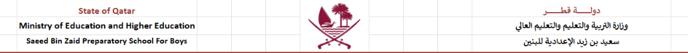
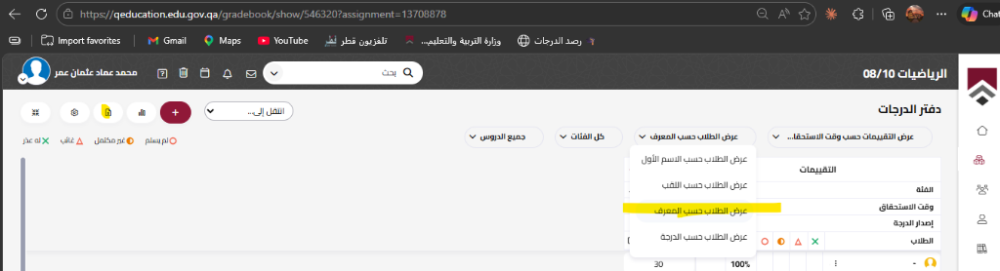
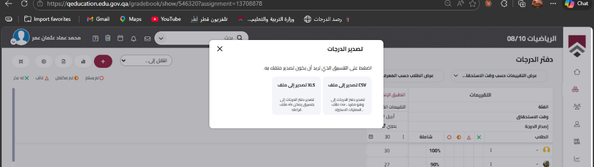

دليل أداة رصد الدرجات التلقائي
خطوات مبسطة وسريعة لنقل الدرجات من منصة قطر إلى K12NET
1
ترتيب الأسماء في منصة قطر
- 💻 ادخل إلى منصة قطر للتعليم
- 📖 افتح دفتر الدرجات للمادة
- ⚙️ حدد التقييم الإلكتروني المطلوب
- 🔄 اضغط على قائمة عرض الطلاب
- ✨ اختر عرض الطلاب حسب المعرف

2
تصدير ملف الدرجات
- 📥 اضغط على زر تصدير الدرجات
- 📊 اختر صيغة التركيب تصدير إلى ملف XLS
- ⬇️ قم بحفظ الملف في جهازك

3
تجهيز أداة الرصد
- 📝 افتح صفحة درجات الشعبة المعنية في K12NET
- 🛠️ افتح أداة الرصد التلقائي (Nsis)
- 📂 اضغط على صندوق رفع الملفات في الأداة
- 📑 اختر ملف الـ XLS الذي قمت بتنزيله للتو

4
الرصد النهائي
- 🔍 ستعرض الأداة معاينة لدرجات الطلاب
- 🖱️ اسحب الزر البرتقالي رصد الدرجات إلى شريط المفضلة
- 🌐 اذهب لصفحة K12NET المفتوحة
- 🚀 اضغط على الزر من شريط المفضلة وسيتم ادخال الدرجات تلقائياً!
🚀
جاهز للرصد!
جاهز للرصد!